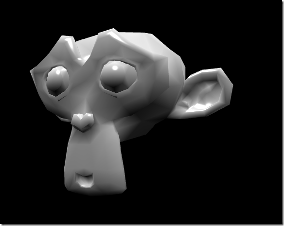

光源
既然你已经了解了相机的种类以及如何在你的场景中放置相机，我们将继续我们的教程来研究Babylonjs的光源。

一个漂亮的球体与多个光源
怎么做 ?
光源用来产生每个像素所收到的漫反射和镜面反射的颜色。然后这个颜色与材质共同作用来产生每个像素的最终颜色。
在本次教程中，我将向你介绍如何使用Babylonjs所支持的每一种光源。
激活/关闭光源
所有光源都可以激活或关闭通过调用它的setEnabled(true/false)方法. 你同样可以控制任何光照的全局强度通过使用intensity 属性. 它使用一个浮点值（比如1.5）。接近教程结尾有一个例子演示了如何同时使用intensity属性和setEnabled()方法.
光源种类
让我们开始... 和四种炫酷的Babylonjs光源一起:
- 点光源
点光源是一种通过世界空间中的一个唯一点定义的光源。光从这个点的所有方向发出。点光源的一个好例子就是太阳。（几乎每一篇教程讲点光源都用太阳做例子，但实际应用中太阳往往不是点光源）
你可以控制任何光的颜色... 通过 diffuse（散射，漫反射）和specular（镜面反射） 属性:
var light0 = new BABYLON.PointLight("Omni0", new BABYLON.Vector3(1, 10, 1), scene); light0.diffuse = new BABYLON.Color3(1, 0, 0); light0.specular = new BABYLON.Color3(1, 1, 1);
红色的漫反射与白色的镜面反射
- 方向光
方向光是通过方向定义的（多么的令人惊讶！）。光从任何地方发出...但是朝着一个方向，无穷的延伸。默认情况下，方向光源被建立在原点（0,0,0）上，像点光源一样，你可以控制光的颜色通过diffuse 和specular 属性:
var light0 = new BABYLON.DirectionalLight("Dir0", new BABYLON.Vector3(0, -1, 0), scene); light0.diffuse = new BABYLON.Color3(1, 0, 0); light0.specular = new BABYLON.Color3(1, 1, 1);
红色漫反射与白色镜面反射的方向光
- 锥形光源
锥形光源的定义通过一个位置参数，一个方向参数，一个弧度参数，一个衰减参数获得。这些参数定义了一个从某一位置出发指向某一方向的光锥。
弧度参数定义了光锥的照明角度大小，衰减参数定义了光强随距离的衰减速度。像其他光源一样，你可以控制光的颜色通过diffuse和specular 属性:

一个简单的锥形光源形状示意图
var light0 = new BABYLON.SpotLight("Spot0", new BABYLON.Vector3(0, 30, -10), new BABYLON.Vector3(0, -1, 0), 0.8, 2, scene); light0.diffuse = new BABYLON.Color3(1, 0, 0); light0.specular = new BABYLON.Color3(1, 1, 1);
红色漫反射和白色镜面反射，0.8弧度宽的圆锥，衰减参数为2
- 半球形光源
半球光源是一种逼真模拟环境光的简单方法。半球光源由一个指向天空的方向（构造函数中的第二个参数）和三个颜色：一个是散射颜色（天空的颜色-物体顶部的像素和面），一个是地面颜色（物体底部的像素和面的颜色），还有一个是镜面反射颜色。
上面，我使用了“物体顶部”和“物体底部”的措辞，但是请记住天空的方向（构造函数中的第二个参数）可以使任意的一个方向。天空的方向通常是垂直向上的（0,1,0）。我们模拟的是来自多云的天空的光，但是即使是在阴天，太阳光仍然从云上穿过天空。所以，你可以把这个参数倾斜向东一些来模拟多云的早晨，把这个参数倾斜向西一些来模拟多云的夜晚。这是一种柔和的光，它不会产生影子。
Now, back to creating the useful and interesting hemispheric light:
var light0 = new BABYLON.HemisphericLight("Hemi0", new BABYLON.Vector3(0, 1, 0), scene);
light0.diffuse = new BABYLON.Color3(1, 1, 1);
light0.specular = new BABYLON.Color3(1, 1, 1);
light0.groundColor = new BABYLON.Color3(0, 0, 0);

黑白的半球光源效果-顶部的像素是白色的（散射），底部的像素是黑色的（地面颜色）
我们的网站在功能测试部分有一个非常好的光源示例程序，一个类似的光源示例程序，可以在playground中找到，就在这里.
关于Babylonjs的一行构造函数的额外知识:
这是一个单行构造函数的例子:
var light0 = new BABYLON.SpotLight("Spot0", new BABYLON.Vector3(0, 30, -10), new BABYLON.Vector3(0, -1, 0), 0.8, 2, scene);
这一行就是建立一个锥形光源所需的所有代码。我们希望Babylonjs的场景建立。。。尽可能的快速和简单。我们也希望场景中物体的呈现和操作能够只使用一行代码实现。锥形光源是一种非常有力的场景物体，并且它的构造函数只使用了很少的参数。。。来使得它可以只通过一行代码来呈现和操作。单行构造函数中的每一个参数都设置了场景物体必须的初始化属性。通过这样做，我们知道它可以只通过一行代码来呈现和操作。
也有一些属性是我们“幕后”设置的。一个这类属性是intensity（强度）. 我们把这个属性默认设置为浮点值1.0.我们为你设置了这个必须的初始化属性。我们也幕后调用了这个光源的setEnabled(true)（启用）方法.
我希望你知道两件重要的事。第一，锥形光源或者其他所有Babylonjs场景物体中的所有属性。。。能够在对象被构造后进行设置。第二，如果你愿意，你可以把单行构造行数中的参数置零或置空，然后自己来设置所有必须的初始化属性。。。一个属性一个属性的。你已经了解了这种快速简单的构造锥形光源场景物体的方法。下面是一个较慢较复杂的构造一个锥形光源的例子
var light0 = new BABYLON.SpotLight("", new BABYLON.Vector3.Zero(), new BABYLON.Vector3.Zero(), 0, 0, scene);
light0.name = "My Slowly and Discretely Constructed Spot Light"
light0.position = new BABYLON.Vector3(0, 30, -10);
light0.direction = new BABYLON.Vector3(0, -1, 0);
light0.angle = 0.8;
light0.exponent = 2;
light0.intensity = 0.5;
light0.diffuse = new BABYLON.Color3(1, 1, 1);
light0.specular = new BABYLON.Color3(1, 1, 1);
light0.setEnabled(1);
使用之歌构造场景物体的“长方法”。。。是很少必要或者被期待的。但是我们认为你应该知道你可以通过这种方式来进行构造，如果你一定要的话。
法线和背面-观察光源:
你可能听过这些词 'normals'和 'backfaces' ，在你的3D之旅中。我们在这个教程中将不会深入的检验这两个概念，但是我将试着去解释法线和背面。。。如何影响光照。
下面的这张图将帮助你理解光如何与“法线”和“背面”相互作用。这个张图展示了两个平面和两个光源。其中一个是锥形光源，另一个是点光源。箭头表示了光照（平面）的法相方向，这些箭头在标准场景中是不可见的，它们在这张图中被显示来帮助说明法线的概念，像两个钻石锥形状代表光源一样。让我们来仔细研究一下这张图
 一个蓝色的背面平面和一个蓝色的前面平面，还有一个锥形光源和一个点光源
一个蓝色的背面平面和一个蓝色的前面平面，还有一个锥形光源和一个点光源
正如你能看到的，当一个Babylonjs平面的背面被照亮时（左侧的平面），这些光源并不产生效果，因为这个平面的法线并不朝向光源。相反地，但一个标准平面的背面被照亮时（右侧的平面），每个光源都能非常好的照亮平面，因为平面的法线朝着光源。
很有趣的是任何一个平面都不会阻碍光源。你能发现左侧平面后面的箭头也同样被这些光源照亮了。这种平面并不会阻碍光束。在Babylonjs中任何网格想要阻碍光束的唯一办法是使用一或两个阴影产生器。
作为最后一点，我希望你知道左侧的平面的material.backFaceCulling = false（在教程3中提到）。不论它设为true还是false，都不会改变光源对背面的作用。光源主要关注的是受光照平面的法线方向（箭头方向）。标准的Babylonjs平面（和地面）的法线指向它们的前面。
新知识: 在最近版本的Babylonjs中一个新的属性被介绍了。。。叫做.range（范围）:
light.range = 300;
更多关于.range属性的信息很快会出现.敬请关注。
局限
Babylonjs允许你建立和管理任意多个的光源，但是请注意一个基本材质只能同时处理固定个数的光源（默认情况下这个值是4，这意味着只有4个最先被启用的光源能够被材质处理）。你可以使用以下的代码改变这个值：
var material = new BABYLON.StandardMaterial("mat", scene);
material.maxsimultaneousLights = 6;
但是注意！在处理更多动态光源时，Babylonjs将产生更大的着色器，这个着色器可能不适用于移动设备或小型设备之类的低端硬件，这时Babylonjs将试着用更少的光源来重新编译着色器。
在我们的playground里可以找到一个使用六个光源的示例,就在这里 -
下一步
通过使用这些给力的光源，你的场景看起来真正开始闪闪发光。不要忘记你可以动态改变光源的位置，方向，颜色，并且由此建立绝妙的灯光秀。我们将很快介绍这一点，或者你自己好好探索一下。也许你可以把光源的属性设置置于场景渲染循环方法里。这很有趣而且美丽！
虽然并不真的是一个光源，你可能对我们的 体积光散射 (上帝之光) 系统感兴趣.
猜猜是什么! 下一篇教程... 它是关于动画的! （其实是位置、旋转、缩放，动画在下下篇）点击这里我们出发!